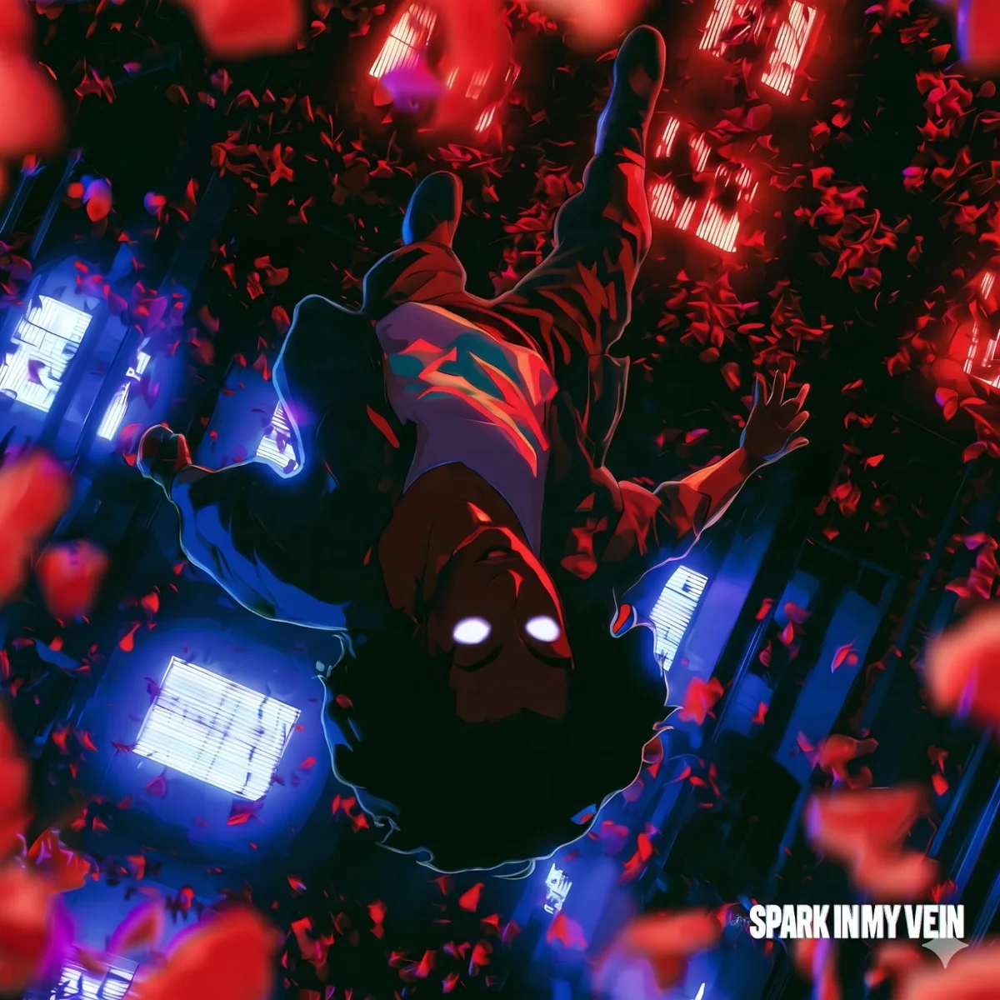
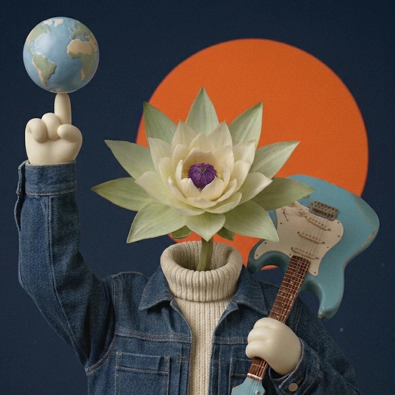
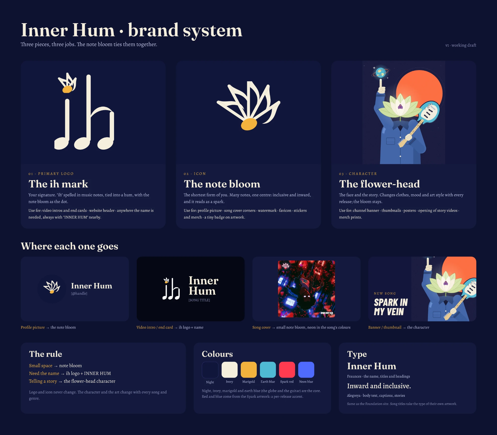

Our vision
Turn people inward through music, stories and video, made with the help of AI and offered to everyone.
We make songs, music videos, stories told through AI video, and social media content. Every piece has one job: to turn the person who meets it toward themselves.
If one piece turns one person inward, it has done the whole job.
Why we’re here
Most people never look inward, and a talk or a teaching won’t reach them. A song, a story or a short video can, because people already welcome these into their lives every day.
We are seekers ourselves. What we want is inclusiveness, because when people become inclusive, union can happen. That’s what yoga is, and the way there is inward.
We do it by giving, not taking, offering what we have: our joy and our love. To give them, we have to be them. Our work can only carry what we are.
We’re not here to become big. We’re here to give.
Who we’re reaching
Our audience is global and multicultural. Above all, it’s people who don’t come from this culture and don’t yet know there’s something beyond what they see.
We also reach believers of every faith, meeting them inside their own lives and traditions. Most haven’t started looking inward yet, so our work meets them where they are.
This isn’t a set of steps to take in order. Our work reaches people at different depths, side by side, and anyone can meet any piece at any time.
-
Turning inward.
For people not asking the deeper questions yet: a gentle turn toward themselves, and a hint that the path is inward. Most of our early work is this.
-
Seeking.
For people already asking: pieces about the seeking itself, the why, the questions, the search for answers.
-
The whole path.
Over the years, our channel, playlists and albums come to hold all of it, and all of it stays inclusive.
Spirituality isn’t only joy. Our work can carry questions, struggle and longing, as long as they point inward.
Our one-line test
Inward and inclusive.
What we make
Four kinds of work. They feed each other, and every one of them has to pass the same test.
-
Music
AI-assisted songs in any genre, language or culture. The heart of the work: something people want to replay.
-
Music videos
AI-made visuals for our songs. They give a song a world and carry it further.
-
Stories
Stories told through AI video, on their own or behind a song. They let people arrive at an insight through a character, not a lecture.
-
Social media
Short pieces cut from the rest or built around it. It’s where most people first meet us, and it points them to the full work.
What’s free to change
- Subject
- Genre
- Language
- Country
- Character
- Setting
Every piece can live in a different world. Music from one culture with a character from another: the mixing itself says we’re one.
How we look
We’re Inner Hum. Three pieces carry us, and the note bloom ties them together.
-
Logo
The ih mark
“ih” written in music notes. A tie joins two notes into one held sound, a hum, and the note bloom is the dot of the i. For intros, end cards, the website, anywhere the name is needed.
-
Icon
The note bloom
Many notes, one centre: inclusive and inward. Our shortest form. Profile picture, song cover corners, watermark, stickers.
-
Brand image
The flower-head
Our face and our storyteller. A bloom for a head, the world held up in one hand, an electric guitar in the other, a denim jacket. Banners, thumbnails, posters, story openings.

On a song cover
Spark in My Vein
The note bloom sits small in the top corner, glowing in the song’s own colours. The artwork stays the star; the bloom quietly signs it as ours.

Another style
Same character, a new world
Here he’s made in soft 3D, with a knitted turtleneck under the denim jacket. The bloom head, the world held up and the guitar are all still there, so he’s still him. Every song can dress him in its own style.
The rule: the official brand image always carries everything: the bloom head, the world held up, the electric guitar and the denim jacket, exactly as at the top of this page. Everywhere else he can show up differently: just the bloom, just the hand holding the world, a new outfit, any art style, any colour. Logo and icon never change.

Everything in one place, in high resolution: Brand guide (PDF) →
We experiment
Our work can be weird, unexpected and unlike anything else out there, because that’s often what makes a stranger stop and feel something.
-
Try different things.
New genres, formats, visual styles, ways of telling a story, mixes of cultures. No idea is too strange to try.
-
Push past our comfort zone.
If something feels safe and familiar to us, that’s a reason to go further, not to stop.
-
Learn from what doesn’t land.
An experiment that misses still teaches us something. We keep going.
The one thing that never changes is the test. However strange a piece gets, it still has to be inward and inclusive.
How we use AI
AI is our instrument, not our voice.
It lets a small team make songs, videos and stories at a quality that once needed studios and film crews. What the work carries still comes from us.
- We bring the intention; AI helps with the craft. The idea, the feeling and the inward turn come from us. AI helps us shape them.
- Human judgment decides what goes out. Nothing goes out because AI made it easy. Every piece passes our test first.
- Ease is not a reason to make more. AI can make without end. We make fewer pieces, each one worth replaying.
- We’re honest about how we make things. We don’t hide that our work is AI-assisted.
What every piece carries
Spirituality doesn’t need a guru or a label. It’s simply how we are. Every song, video, story and post shows that.
-
It points inward.
Whatever it’s about (a person, nature, a moment, anything), it turns the person toward themselves. Even a piece that only asks a question looks inward for the answer.
-
It widens the circle.
It includes rather than divides: people, nature, even the parts of ourselves we push away.
-
It shows, never tells.
If a lesson needs a line to explain it, it’s a sermon. People should get there on their own.
-
It never judges.
No “you’re living wrong.”
On religion and gurus: any religion can appear as part of someone’s life. Gurus, and anything that would make us look like a guru’s channel, stay out for now. Later they may come in subtly, never as the highlight.
What we’re not
- Not a content farm. Volume is never the goal.
- Not a preaching channel. We don’t explain, instruct or lecture.
- Not a guru’s channel. And not tied to any one religion.
- Not chasing the numbers. Trends, views and followers aren’t what we’re after.
- Not here to take. We ask for nothing back for what we give.
How we stay true
- Consistency: we show up for years, not months.
- Craft: every piece has to work on its own terms first. A song people replay, a story people feel, a video people watch to the end.
- Integrity under pressure: when something flops or takes off, we don’t chase the numbers. We come back to this page.
What success looks like: not reach or follower counts. It’s people telling us a song or a story made them stop and look within, people coming back to our work again and again, and a body of work that, over the years, walks the whole path.
This stays limitless only as long as we don’t need it to be big.
Our strategy
The vision says why we’re here. This is how the work finds the people it’s for.
-
Who we write for first.
We want to reach everyone. But most of what we make is aimed at people aged 16 to 30, anywhere in the world, who don’t think of themselves as spiritual. Seekers and believers will find us too, and they’re welcome. Every piece is written first for the person who thinks none of this is for them.
-
It starts in their life.
Overthinking, loneliness, comparison, “why wasn’t that enough?” We open where they already are and use their words, not ours.
What we put out
- Music
- Songs
- Music videos
- Song clips with lyrics
- Hour-long calm music
- Stories
- Today’s situations: things happening in people’s lives and in the world
- History: real events and people from the past
- Indian epics and Puranas: Ramayana, Mahabharata, Shiva, Vishnu and Devi Puranas
- World mythologies and traditions: Greek, Zen, Sufi, Taoist, Biblical, Buddhist and others
- Longer stories
- Spirituality
- Seeking: what it is, why people start, the questions behind it
- One spiritual idea explained plainly
- Yoga and meditation
- Yoga
- Meditation
- Content around them: one-minute experiments, common questions, what people get wrong
- Posts
- Question cards
- Carousels
- Community
- Replies to comments
- How we made it
- Monthly compilation
- Not decided yet
- A word from another language that names an inner state
- Wonder videos: the universe, time, the body
- Comedy sketches with the mascot
What stays the same
Our stories, moods and motion can change freely, and the motion can grow with our budget, from stop-motion to full AI video. These stay in place so the page always looks like one channel:
- Covers: one template for every post.
- Captions in videos: same font, position and highlight colour.
- Colours: the same few on every cover and text element.
- The Brahma Kamal: somewhere in every piece.
- The ending: same two seconds and the same hum.
- Art style: same within a content type, different between types.
- Profile picture and bio: the mascot, and one clear line saying what we make.
Where it lives
YouTube is home: short videos for reach, longer ones for depth. Instagram is where pieces get shared. Streaming platforms carry the songs. The short pieces always point to the longer work.
How we keep it human
- Our own words. We write every lyric and finish every track ourselves, under our real names, and we say where AI was used.
- Our own experience. We only make pieces about what we’ve seen for ourselves, never anyone else’s lines, stories or recordings.
- Fewer, better pieces. Varied and made with care, never mass-produced.
How it sustains itself
None of us is paid from this. Income from ads, and any support people choose to give, goes back into the work: tools, better production, real musicians. We never ask for support inside a piece.
What we watch
Whether people finish a piece, whether they send it to someone, and whether they tell us it hit them and they don’t know why.
The order of work
- 1. Vision. Done. It’s this page.
- 2. Strategy. Done. It’s this section.
- 3. Art style. One look for everything we make.
- 4. Colours, fonts and theme. And how we present ourselves on each platform.
- 5. Content. Our three to five series, with examples, and the ideas and scripts for the first four reels.
- 6. The name. Chosen once the look and the first reels are clear to all of us, then the logo and handles.
- 7. Launch. The first four reels, shown first to a few of the people we’re writing for.
Who does what: one of us takes steps 3 and 4 and locks the look of the channel. The other two prepare the content in step 5. Step 6 we do together.
A child is born before it’s named. We name the channel when all three of us are picturing the same thing.
Our goals for the first six months
We’re three people doing this alongside other work, so we keep a pace we can hold every month without a gap:
- 6 songs, each with its music video.
- 24 short pieces, four a month, one a week.
What we aim to reach:
- 100,000 followers across our platforms.
- One music video past 1 million views.
- 100 million views in all. This one is a stretch.
- YouTube ad income switched on. The bar doubles for channels applying from 1 February 2027.
These numbers tell us whether the work is reaching people. They aren’t why we make it.
Before anything goes out
How we make every song, from lyrics to release: Song Playbook →